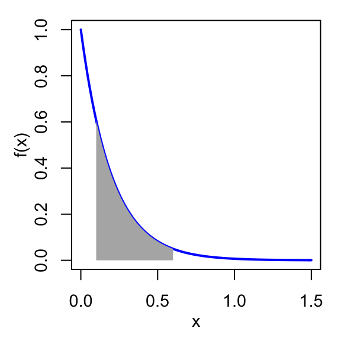
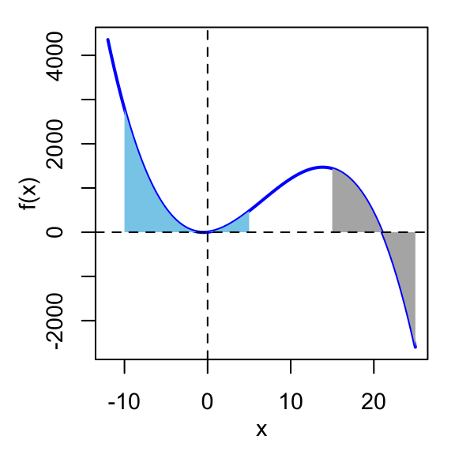

6.3 Ejercicios
6.3.1 Ej. 1. Número de datos perdidos
Cree una función que entregue el número de datos perdidos existentes en un vector de números.
6.3.2 Ej. 2. Factura con IVA.
Cree una función que entregue el valor total que un cliente debe pagar por un producto discriminando el IVA (impuesto de valor agregado) y el valor específico del producto, usando tan sólo el valor específico del producto. Asuma un IVA de 16% por defecto, pero permita que se le pueda especificar otro valor del IVA. La función debe entregar un data.frame con tres filas: Producto, IVA y Total de la siguiente forma:
Item Valor
1 Producto 45560.0
2 IVA (16%) 7289.6
3 Total 52849.66.3.3 Ej. 3. Área bajo la curva
El área bajo la curva de una función matemática tiene aplicaciones importantes en diferentes ramas de la ciencia. El archivo area_xy.R contiene la función area_xy para R. Esta función cálcula las coordenadas \((x, y)\) del polígono que se forma por el área bajo la curva de alguna función \(f(x)\) en cierto intervalo \(x_0 < x < x_1\). Estas coordenadas pueden ser usadas directamente por el comando polygon (paquete: graphics) de R para agregar al gráfico de una función el área bajo la curva. A continuación un ejemplo de lo que la función area_xy puede hacer. La siguiente figura muestra la curva de una función de decaimiento exponencial con el área bajo la curva sombreada en el intervalo \(0.1 < x < 0.6\). La función area_xy permite agregar el polígono del área rapidamente.

Descargue el archivoarea_xy.R, carguelo a su espacio de trabajo, explore el contenido del archivo y realice las siguientes actividades:
# Tambien puede cargar la funcion a su espacio de trabajo usando:
source('https://raw.githubusercontent.com/paguzmang/funciones/master/area_xy.R')- ¿Qué tipo de objeto entrega la función
area_xy? - ¿Qué papel juega el argumento
aen la funciónarea_xy? - Use la función
area_xypara dibujar el área bajo la curva de la función: \[f(x) = -x(x-21)(x+1)\] en el intervalo \(-10<x<5\), y otra en el intervalo \(15<x<25\).
d. Use la funciónarea_xypara dibujar el área bajo la curva de la función: \[f(x) = x - 2\ln x\] en el intervalo: \(1<x<5\).
6.3.4 Ej. 4. Revisando la salida de una función
Modifique la función area_xy para que entregue un data.frame en lugar de una list. Luego pruebe la función con el comando polygon para verificar si aún trabaja.
6.3.5 Ej. 5. El vertice de una parábola
La ecuación de una parábola tiene la forma: \(f(x) = ax^2 + bx + c\) (con \(a \neq 0\)). Una parábola tiene un vertice en la coordenada:\[\left[x = \dfrac{-b}{2a}, \quad y = f\left(\dfrac{-b}{2a}\right) \right]\] El vertice de una parábola es su punto más alto (si abre hacía abajo) o más bajo (si abre hacía arriba).
- Cree una función llamada
vertice_parabolaque produzca una lista con las coordenadas \((x, y)\) del vertice de una parábola cualquiera \(f(x)\). - Use la función
vertice_parabolapara marcar con un punto el vertice de la parábola \(f(x) = x^2 + 2x + 4\). Utilicecurvepara gráficar la parábola ypointspara agregar el punto-vertice.
6.3.6 Ej. 6. Encontrando mínimos o máximos
Encontrar el mínimo o el máximo de una función matemática tiene aplicación en procesos de optimización. Los mínimos y máximos corresponden a valores críticos de una función y tradicionalmente se pueden determinar usando derivación. No obstante, podemos crear rutinas o programas que encuentren aproximaciones a los mínimos y máximos de forma manual y de manera localizada. En R, por ejemplo, la funciones which.min y which.max entregan la posición del mínimo y del máximo de un vector de números. El siguiente código R de cuatro líneas, define una función \(f\) (la misma del ejercicio anterior) y luego intenta detectar las coordenadas \((x, y)\) donde ocurre el mínimo de \(f\) en el intervalo \(-2 < x < 1\):
f <- function(x) x^2 + 2*x + 4 # 1. se define la funcion
x <- seq(-2, 1, 0.01) # 2.
pos.min <- which.min(f(x)) # 3.
c(x = x[pos.min], y = f(x[pos.min]) ) # 4.- Explore el código, entienda y describa que se hace en las líneas 2, 3 y 4 del código.
- Convierta el código en un comando que reciba la función \(f\) (cualquiera) y un intervalo de valores en \(x\), y por otro lado, entregue un
data.framecon las coordenadas \((x, y)\) donde ocurre el mínimo de \(f\). - Pruebe su comando encontrando el mínimo de la función \(f(x) = x(x -1)(x-2)\) en el intervalo \(0 < x < 2\). Utilice
curvepara gráficar la función en el intervalo \(-2 < x < 3\), ypointspara agregar el punto encontrado. También adicione el área bajo la curva en el intervalo \(0 < x < 2\) empleando la funciónarea_xydel ejercicio (3).
6.3.7 Ej. 7. Aplicación de una parábola y maximización
Polinomios se usan con frecuencia para modelar fenómenos en biología. Por ejemplo, los pinzones zebra (Taeniopygia guttata), una especie de ave de la familia Estrildidae, mueven sus alas rapidamente como si estuvieran aplaudiendo, para ganar energia dinámica y luego pliegan sus alas hacía el cuerpo por cierto período de tiempo y vuelan como un proyectil. En un estudio se registró el desplazamiento vertical que toma un individuo típico de esta especie en función del tiempo, y se ajustó el modelo \[y = -4.3958x^2 + 1.5355x + 0.0344\] donde \(y\) representa el desplazmiento vertical (en metros) y \(x\) indica el tiempo (en segundos) desde el inicio (\(x = 0\) seg) del movimiento de sus alas. El modelo trabaja para el intervalo \(0 < x < 0.4\) seg.
- Utilice R para construir una función para el modelo planteado y uselo para encontrar la altura alcanzada a los 0.10, 0.15 y 0.20 segundos de iniciado el movimiento de las alas. Muestre los resultados en un
data.framecon columnas \(x\), \(y\). - Use
curvepara graficar el modelo. Etiquete los ejes de forma adecuada. - En el gráfico del ejercicio (b), intente ubicar “al ojo” el tiempo donde se alcanza el desplazamiento máximo. Utilice
ablinepara trazar una línea vertical en dicho tiempo. - Use el comando
vertice_paraboladel ejercicio (5) para encontrar el tiempo que maximiza el desplazamiento vertical. - Modifique y utilice el comando creado en el ejercicio (6b) para encontrar el tiempo que maximiza el desplazamiento vertical.
6.3.8 Ej. 8. ¿Creciente o decreciente?
Construya un comando llamado eval_crec_fun que evalue si una función matemática cualquiera \(f(x)\) es creciente o decreciente en cierto valor \(x = x_m\), donde \(x_m\) es un número tal que \(x_m -\varepsilon < x_m < x_m + \varepsilon\), y \(\varepsilon\) es una cantidad pequeña entrada por el usuario al comando. Suponiendo que el comando eval_crec_fun ya fue creado, a continuación se muestra un ejemplo de su uso y del resultado:
# (1) Se define la funcion matematica a evaluar (la misma del ejercicio 3)
mifun <- function(x) {-x*(x-21)*(x+1)}
# (2) Se pregunta si es creciente o decreciente en x = 3:
eval_crec_fun(x = 3, f = mifun, e = 0.01)[1] "Creciente"# (3) Se pregunta si es creciente o decreciente en x = 20:
eval_crec_fun(x = 20, f = mifun, e = 0.01)[1] "Decreciente"Note que el nuevo comando eval_crec_fun recibe tres argumentos: x, el valor de \(x\) donde se quiere hacer la evaluación, f, el nombre de la función \(f(x)\), y e, la cantidad pequeña \(\varepsilon\). Por otro lado, el comando eval_crec_fun entrega o produce como salida una cadena de texto indicando si la función f es Creciente o Decreciente en x. Usted puede verificar el resultado revisando la gráfica de \(f(x)\). Para poder construir el comando eval_crec_fun repase sus notas de los cursos de matemáticas sobre como definir si una función es creciente o decreciente. (Ayuda: Use el comando ifelse). Luego de construido su comando, realice las siguientes actividades:
- Use el comando para evaluar si \(f(x) = 3x^5 - 25x^3 + 60x\) es creciente o no en \(x = 0.5\), \(x = 1.5\), y \(x = 2.25\). Gráfique la función y verifique los hallazgos obtenidos con su comando
eval_crec_fun. - Reflexione sobre cuál es el papel del argumento
e= \(\varepsilon\).